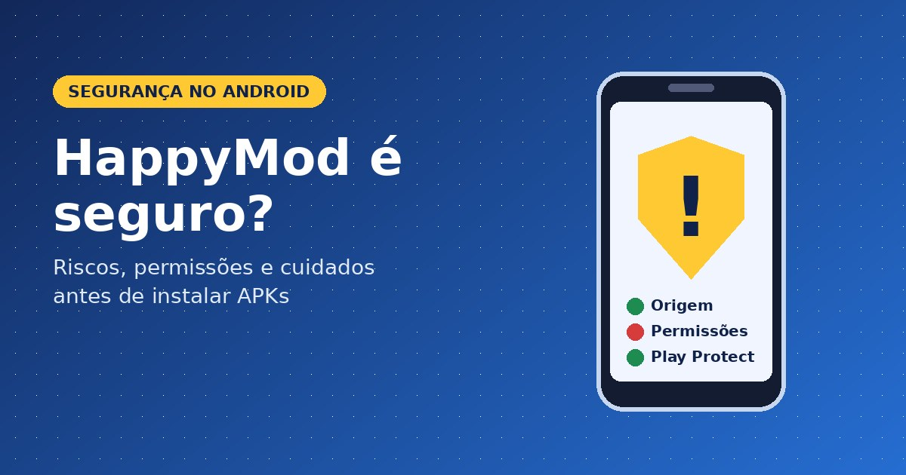
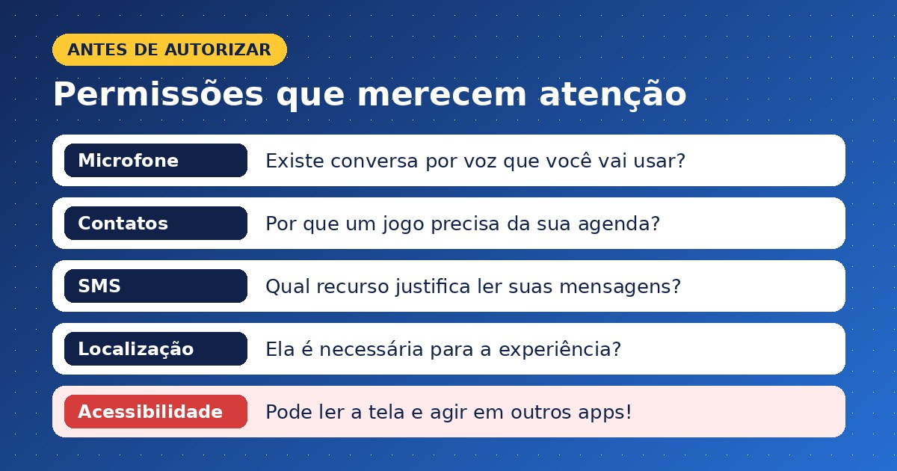
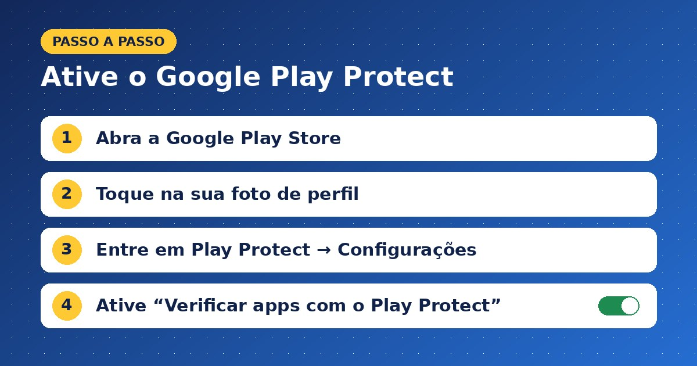

HappyMod é seguro? Entenda os riscos antes de instalar

Não é possível garantir que o HappyMod e todos os aplicativos distribuídos por ele sejam seguros. A pergunta envolve mais do que baixar uma loja alternativa: também importa qual APK você instala, quem o modificou e quais acessos ele solicita. Para quem usa o mesmo celular para jogar, conversar e acessar serviços bancários, essa diferença merece atenção. Antes de aceitar promessas de recursos desbloqueados, vale entender o que está sendo instalado. Este guia explica como avaliar sinais de risco, revisar permissões e agir se você já baixou um aplicativo suspeito.
O que é o HappyMod e o que significa APK modificado?
O HappyMod se apresenta como uma plataforma de aplicativos e jogos modificados para Android. Essas versões, chamadas de mods, podem anunciar alterações como remoção de anúncios, recursos desbloqueados ou mudanças na experiência de jogo. Essa é a proposta descrita na página inicial do Happymodds.
APK é o formato de pacote usado para distribuir e instalar aplicativos Android. Um APK modificado contém alterações em relação ao aplicativo original. Por isso, a reputação do desenvolvedor original não deve ser transferida automaticamente para uma versão alterada por terceiros.
A distinção mais importante é esta: avaliar o instalador da plataforma não equivale a avaliar cada jogo disponível nela. São arquivos diferentes, e uma conclusão sobre um deles não comprova a segurança dos demais.
HappyMod tem vírus? O que podemos afirmar
Não há base, nesta análise, para dizer que todo arquivo associado ao HappyMod contém vírus. Também não há evidência suficiente para declarar que todos estão livres de ameaças. Nenhum APK foi instalado ou testado para este artigo.
“Vírus” costuma ser usado como nome genérico para problemas diferentes. O termo mais amplo é malware: software nocivo que pode roubar informações ou prejudicar o dispositivo. O Google inclui anúncios persistentes e funcionamento anormal entre os possíveis sinais de infecção, mas esses sintomas, isoladamente, não confirmam a causa. (Ajuda da Conta do Google)
Comentários positivos e relatos de que um jogo “funciona” respondem principalmente a uma dúvida de funcionamento. Eles não demonstram, por si só, o que o aplicativo faz com os dados do usuário. Da mesma forma, uma promessa de “100% seguro” precisa de evidências verificáveis, não apenas de um selo na página.
Quais permissões merecem mais atenção?
No Android, permissões controlam o acesso a recursos como câmera, microfone, localização, contatos e mensagens SMS. Você pode conferir e alterar esses acessos nas configurações do aparelho. (Ajuda do Android)

Avalie se o pedido combina com a função do aplicativo:
| Pedido do aplicativo | Pergunta antes de autorizar |
|---|---|
| Microfone | Existe uma função de conversa por voz que você pretende usar? |
| Contatos | Por que esse jogo precisa acessar sua agenda? |
| SMS | Qual recurso justifica acesso às suas mensagens? |
| Localização | A localização é necessária para a experiência oferecida? |
Imagine um quebra-cabeça simples que solicita SMS e acessibilidade para liberar uma fase. Esse exemplo hipotético não prova uma fraude, mas indica uma incompatibilidade que merece interromper a instalação.
A acessibilidade exige atenção especial: dependendo do acesso concedido, um aplicativo pode ler o conteúdo da tela e interagir com outros apps em seu nome. O Google recomenda não liberar configurações restritas sem confiar no desenvolvedor. (Ajuda do Android)
Checklist antes de instalar qualquer mod
Use estas perguntas como filtro inicial:
- A origem está clara? Procure identificar quem publica o arquivo e quem realizou as alterações.
- As permissões fazem sentido? Recuse acessos que não tenham uma justificativa relacionada ao uso.
- Há pressão para ignorar alertas? Não desative proteções apenas para concluir a instalação.
- A promessa substitui a explicação? “Premium grátis” não esclarece como o aplicativo foi modificado.
- Você precisa informar credenciais? Evite inserir senhas importantes em versões cuja procedência não consegue verificar.
O Google alerta que pedidos inexplicáveis para mudar configurações e ofertas boas demais para ser verdade podem aparecer em tentativas de golpe. Esses sinais orientam a avaliação; não representam um diagnóstico específico do HappyMod. (Ajuda do Android)
O Google Play Protect verifica apps de outras fontes?
Sim. O Google Play Protect verifica aplicativos de outras fontes, além dos disponíveis na Play Store. Ele pode alertar, bloquear, desativar ou remover aplicativos considerados nocivos. O Google recomenda mantê-lo ativado. (Ajuda do Google Play)

Para conferir a configuração:
- Abra a Google Play Store.
- Toque na sua foto ou no ícone do perfil.
- Entre em Play Protect → Configurações.
- Confira se Verificar apps com o Play Protect está ativado.
A opção de melhorar a detecção permite enviar aplicativos desconhecidos ao Google para análise. Considere essa informação ao escolher a configuração. Uma verificação é uma camada de proteção, não uma certificação permanente de todos os downloads de uma plataforma.
Já instalei um aplicativo suspeito. O que fazer?
Comece revisando os aplicativos instalados e removendo aqueles em que não confia. Confira também as permissões em Configurações → Apps → aplicativo → Permissões; os nomes dos menus podem variar conforme o aparelho. (Ajuda do Android)
Depois, mantenha o Play Protect ativo, instale as atualizações disponíveis do Android e verifique a segurança da sua Conta do Google. Essas medidas fazem parte das orientações oficiais para lidar com software não seguro. Se os sinais persistirem, procure o suporte do fabricante; em determinados casos, pode ser necessário redefinir o dispositivo. (Ajuda da Conta do Google)
Qual decisão faz mais sentido?
Se a prioridade é preservar seus dados, prefira a versão publicada pelo desenvolvedor em uma loja confiável. Para economizar, procure opções gratuitas ou recursos disponibilizados oficialmente.
Ao perguntar se o HappyMod é seguro, considere sempre o arquivo específico e os acessos solicitados. Se você não consegue verificar a origem ou precisa ignorar um alerta para continuar, interrompa a instalação. Recursos extras não justificam uma decisão tomada sem entender os riscos.